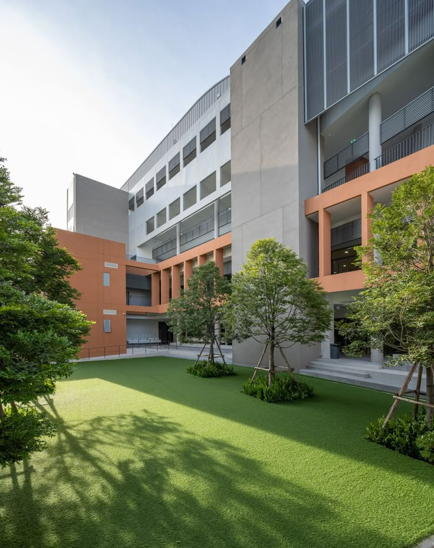

Cedarston Int. Christian School
Cedarston Int. Christian School
CEDARSTON INT. CHRISTIAN SCHOOL
Equiping leaders to transform

Cedarston International Christian School is a learning community focused on academic excellence, character development, and holistic education. The school provides a supportive environment where students are encouraged to grow intellectually, socially, and spiritually while building strong foundations for their future studies.
At Cedarston, we believe in nurturing the whole child—mind, body, and spirit—preparing them to be effective leaders and responsible citizens in a rapidly changing world.
Beyond academics, we foster a love for learning and a commitment to service, preparing our students to make a positive impact in their communities and beyond.
Click Here For MoreExplore the programmes we offer at Cedarston

Cedarston International Christian School offers the ACE (Accelerated Christian Education) program from Grade 1 to Grade 9. This program is designed to help students learn at their own pace while building strong foundations in core subjects such as English, Mathematics, Science, and Social Studies, along with character development and independent study skills.
Learn MoreFrom Grade 10 to Grade 12, students transition into the OSSD (Ontario Secondary School Diploma) program. This internationally recognized curriculum prepares learners for university and future careers through a broad range of academic subjects, critical thinking, and continuous assessment. The OSSD program emphasizes both academic excellence and character development, equipping students with the skills and knowledge needed for success in higher education and beyond.
Learn MoreStay up to date with what's happening at Cedarston
Come visit our campus and learn about our programmes, meet teachers, and tour the school. All prospective families are welcome.
AdmissionsA special thanksgiving service celebrating student achievements and closing out the term together as a school community.
SpiritualWelcome back! New and returning students report for the start of the new academic term. Registration opens at 8:00 AM.
AcademicStudents showcase creative and scientific projects to parents, teachers, and peers. A celebration of talent and hard work.
Student Life